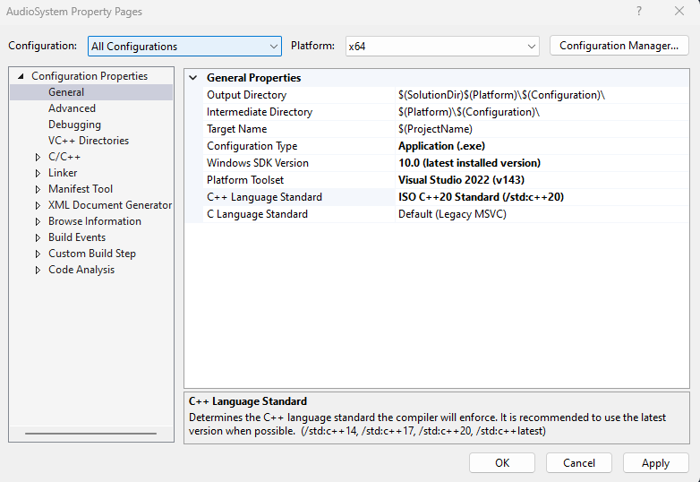
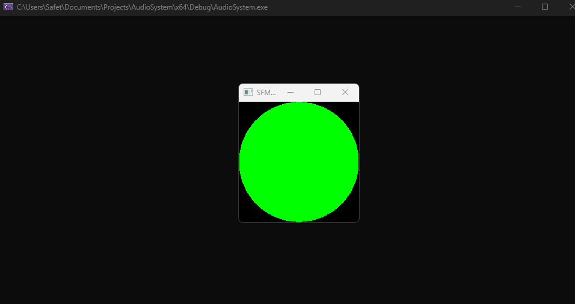

1. Uvod
Text vezan za uvod
2. Struktura
Text vezan za strukturu
Potrebno je promijeniti verziju kompaljera radi nekih integralnih funcktionalnsti koji sadrži standardna C++ biblioteka koje su podržane u novijim standardima:
Promijenjeno iz Default (ISO C++14 Standard) u ISO C++20 Standard (/std:c++20)
3. SFML
3.1 Šta je SFML?
Simple and Fast Multimedia Library (Oficijalna Stranica) je biblioteka koja pruža jednostavan interfejs za različite komponente računara, kako bi se olakšao razvoj igara i multimedijalnih aplikacija. Sastoji se od pet modula:
sistem (system)prozor (window)grafika (graphics)audio (audio)mreža (network)
3.2 Zašto SFML?
Odlučeno je da se za projekat koristi GUI pritup umjesto Konzolnog pristupa jer omogučava kompleksnije i fleksibilnije korištenje aplikacije. Jedan od primjera je da aplikacija može biti interaktivna putem miša.
3.3 Instalacija SFML
Instalacija SFML-a je opisana na Oficijalnoj Stranici na kojoj je potrebno preuzeti odgovarajuću biblioteku za odgovarajući sistem. Pošto je za projekat odlučeno koristiti Visual Studio kao IDE, potrebno je preuzeti: Visual C++ 17 (2022) - 64-bit SFML
Zatim je potrebno otpakovati arhivu.
3.4 Postavljanje SFML
Postupak postavljanja biblioteke za Visual Studio je detaljno opsian Ovdje
Kao prvi korak potrebno je napraviti prazan ili konzolni C++ projekat u Visual Studio, odlučeno je napraviti prazan projekat u koji je dodan main.cpp file.
Sada je potrebno linkati SFML headers i SFML libraries projektu:
Pošto je odlučeno napraviti statički linkan projekat, SFML headers i libraries ce se nalaziti unutar putanje projekta. SFML include i lib folderi su postavljeni u
folder nazvan External ali pošto je statički linkano potrebno je postaviti i dll fajlove unutar projekta potrebne
za projekat:
Pošto su postavke i putanje jednake za Debug i Release označeno je All Configurations, da se postave postavke globalno.
Tokom postavke putanje je korišten Macro $(ProjectDir)\External jer omogučava fleksibilnost relokacije projekta.
Za Release konfiguraciju je dodana SFML_STATIC preprocesor komanda:
Nakon instalacije i postavljanja SFML može se testirati da li je korektno postavljena biblioteka tako što se pokreće kod koji otvara prozor i iscrtava zelenu kružnicu:
Konzola i Zelena kružnica:
S time je SFML uspješno uspostavljen!